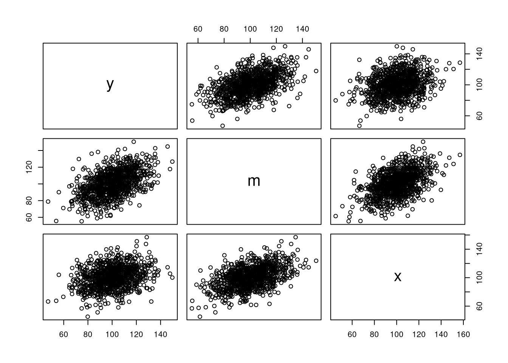

Chapter 8 The Simple Mediation Model
Let \(y\), \(m\), \(x\), \(\varepsilon_y\), and \(\varepsilon_m\) be random variables whose associations are given by
\[\begin{equation} y = \beta_0 + \beta_1 x + \beta_2 m + \varepsilon_y \end{equation}\]
\[\begin{equation} m = \alpha_0 + \alpha_1 x + \varepsilon_m \end{equation}\]
or combined
\[\begin{equation} \begin{split} y &= \beta_0 + \beta_1 x + \beta_2 (\alpha_0 + \alpha_1 x + \varepsilon_m) + \varepsilon_y \\ &= \beta_0 + \beta_1 x + \beta_2 \alpha_0 + \alpha_1 \beta_2 x + \beta_2 \varepsilon_m + \varepsilon_y \end{split} \end{equation}\]
where
- \(\beta_1\) is the path from \(x\) on \(y\)
- \(\beta_2\) is the path from \(m\) to \(y\)
- \(\alpha_1\) is the path from \(x\) to \(m\)
- \(\varepsilon_y\) and \(\varepsilon_m\) are uncorrelated error terms with means of zero and constant variances of \(\sigma_{\varepsilon_y}^{2}\) and \(\sigma_{\varepsilon_m}^{2}\) respectively
- \(\beta_0\) and \(\alpha_0\) are intercepts
Figure 8.1: The Simple Mediation Model
Figure 8.2: The Simple Mediation Model with Mean Structure
8.1 Symbolic
Let \(\left\{ y, m, x, \varepsilon_y, \varepsilon_m \right\}\) be the variables of interest.
\[\begin{align*}\mathbf{A} &=\left( \begin{array}{ccccc} 0 & \beta _{2} & \beta _{1} & 1 & 0 \\ 0 & 0 & \alpha _{1} & 0 & 1 \\ 0 & 0 & 0 & 0 & 0 \\ 0 & 0 & 0 & 0 & 0 \\ 0 & 0 & 0 & 0 & 0 \end{array} \right)\end{align*}\]
\[\begin{align*}\mathbf{S} &=\left( \begin{array}{ccccc} 0 & 0 & 0 & 0 & 0 \\ 0 & 0 & 0 & 0 & 0 \\ 0 & 0 & \sigma _{x} ^{2} & 0 & 0 \\ 0 & 0 & 0 & \sigma _{\varepsilon _{y}} ^{2} & 0 \\ 0 & 0 & 0 & 0 & \sigma _{\varepsilon _{m}} ^{2} \end{array} \right)\end{align*}\]
\[\begin{align*}\mathbf{C} &=\left( \mathbf{I} - \mathbf{A} \right)^{-1} \mathbf{S} \left[ \left( \mathbf{I} - \mathbf{A} \right)^{-1} \right]^{\mathsf{T}} \\\\ &=\mathbf{E} \mathbf{S} \mathbf{E}^{\mathsf{T}} \\\\ &=\left( \begin{array}{ccccc} 1 & \beta _{2} & \beta _{1} + \beta _{2} \alpha _{1} & 1 & \beta _{2} \\ 0 & 1 & \alpha _{1} & 0 & 1 \\ 0 & 0 & 1 & 0 & 0 \\ 0 & 0 & 0 & 1 & 0 \\ 0 & 0 & 0 & 0 & 1 \end{array} \right)\left( \begin{array}{ccccc} 0 & 0 & 0 & 0 & 0 \\ 0 & 0 & 0 & 0 & 0 \\ 0 & 0 & \sigma _{x} ^{2} & 0 & 0 \\ 0 & 0 & 0 & \sigma _{\varepsilon _{y}} ^{2} & 0 \\ 0 & 0 & 0 & 0 & \sigma _{\varepsilon _{m}} ^{2} \end{array} \right)\left( \begin{array}{ccccc} 1 & \beta _{2} & \beta _{1} + \beta _{2} \alpha _{1} & 1 & \beta _{2} \\ 0 & 1 & \alpha _{1} & 0 & 1 \\ 0 & 0 & 1 & 0 & 0 \\ 0 & 0 & 0 & 1 & 0 \\ 0 & 0 & 0 & 0 & 1 \end{array} \right)^{\mathsf{T}}\\ &=\left( \begin{array}{ccccc} \sigma _{x} ^{2} \beta _{1} ^{2} + 2 \sigma _{x} ^{2} \beta _{1} \beta _{2} \alpha _{1} + \sigma _{x} ^{2} \beta _{2} ^{2} \alpha _{1} ^{2} + \beta _{2} ^{2} \sigma _{\varepsilon _{m}} ^{2} + \sigma _{\varepsilon _{y}} ^{2} & \beta _{1} \alpha _{1} \sigma _{x} ^{2} + \beta _{2} \alpha _{1} ^{2} \sigma _{x} ^{2} + \beta _{2} \sigma _{\varepsilon _{m}} ^{2} & \beta _{1} \sigma _{x} ^{2} + \beta _{2} \alpha _{1} \sigma _{x} ^{2} & \sigma _{\varepsilon _{y}} ^{2} & \beta _{2} \sigma _{\varepsilon _{m}} ^{2} \\ \alpha _{1} ^{2} \sigma _{x} ^{2} \beta _{2} + \alpha _{1} \sigma _{x} ^{2} \beta _{1} + \beta _{2} \sigma _{\varepsilon _{m}} ^{2} & \sigma _{x} ^{2} \alpha _{1} ^{2} + \sigma _{\varepsilon _{m}} ^{2} & \alpha _{1} \sigma _{x} ^{2} & 0 & \sigma _{\varepsilon _{m}} ^{2} \\ \sigma _{x} ^{2} \beta _{1} + \sigma _{x} ^{2} \beta _{2} \alpha _{1} & \sigma _{x} ^{2} \alpha _{1} & \sigma _{x} ^{2} & 0 & 0 \\ \sigma _{\varepsilon _{y}} ^{2} & 0 & 0 & \sigma _{\varepsilon _{y}} ^{2} & 0 \\ \sigma _{\varepsilon _{m}} ^{2} \beta _{2} & \sigma _{\varepsilon _{m}} ^{2} & 0 & 0 & \sigma _{\varepsilon _{m}} ^{2} \end{array} \right)\end{align*}\]
\[\begin{align*}\mathbf{F} &=\left( \begin{array}{ccccc} 1 & 0 & 0 & 0 & 0 \\ 0 & 1 & 0 & 0 & 0 \\ 0 & 0 & 1 & 0 & 0 \end{array} \right)\end{align*}\]
\[\begin{align*}\mathbf{M} &=\mathbf{F} \left( \mathbf{I} - \mathbf{A} \right)^{-1} \mathbf{S} \left[ \left( \mathbf{I} - \mathbf{A} \right)^{-1} \right]^{\mathsf{T}} \mathbf{F}^{\mathsf{T}} \\&=\mathbf{F} \mathbf{E} \mathbf{S} \mathbf{E}^{\mathsf{T}} \mathbf{F}^{\mathsf{T}} \\&=\mathbf{F} \mathbf{C} \mathbf{F}^{\mathsf{T}} \\&=\left( \begin{array}{ccc} \sigma _{x} ^{2} \beta _{1} ^{2} + 2 \sigma _{x} ^{2} \beta _{1} \beta _{2} \alpha _{1} + \sigma _{x} ^{2} \beta _{2} ^{2} \alpha _{1} ^{2} + \beta _{2} ^{2} \sigma _{\varepsilon _{m}} ^{2} + \sigma _{\varepsilon _{y}} ^{2} & \beta _{1} \alpha _{1} \sigma _{x} ^{2} + \beta _{2} \alpha _{1} ^{2} \sigma _{x} ^{2} + \beta _{2} \sigma _{\varepsilon _{m}} ^{2} & \beta _{1} \sigma _{x} ^{2} + \beta _{2} \alpha _{1} \sigma _{x} ^{2} \\ \alpha _{1} ^{2} \sigma _{x} ^{2} \beta _{2} + \alpha _{1} \sigma _{x} ^{2} \beta _{1} + \beta _{2} \sigma _{\varepsilon _{m}} ^{2} & \sigma _{x} ^{2} \alpha _{1} ^{2} + \sigma _{\varepsilon _{m}} ^{2} & \alpha _{1} \sigma _{x} ^{2} \\ \sigma _{x} ^{2} \beta _{1} + \sigma _{x} ^{2} \beta _{2} \alpha _{1} & \sigma _{x} ^{2} \alpha _{1} & \sigma _{x} ^{2} \end{array} \right)\end{align*}\]
\[\begin{align*}\mathbf{v} &=\left( \mathbf{I} - \mathbf{A} \right)^{-1} \mathbf{u}\\ &=\left[\left( \begin{array}{ccccc} 1 & 0 & 0 & 0 & 0 \\ 0 & 1 & 0 & 0 & 0 \\ 0 & 0 & 1 & 0 & 0 \\ 0 & 0 & 0 & 1 & 0 \\ 0 & 0 & 0 & 0 & 1 \end{array} \right)-\left( \begin{array}{ccccc} 0 & \beta _{2} & \beta _{1} & 1 & 0 \\ 0 & 0 & \alpha _{1} & 0 & 1 \\ 0 & 0 & 0 & 0 & 0 \\ 0 & 0 & 0 & 0 & 0 \\ 0 & 0 & 0 & 0 & 0 \end{array} \right)\right]^{\mathsf{-1}}\left( \begin{array}{c} \beta _{0} \\ \alpha _{0} \\ \mu _{x} \\ 0 \\ 0 \end{array} \right)\\ &=\left( \begin{array}{c} \beta _{0} + \beta _{2} \alpha _{0} + \beta _{2} \alpha _{1} \mu _{x} + \beta _{1} \mu _{x} \\ \alpha _{0} + \alpha _{1} \mu _{x} \\ \mu _{x} \\ 0 \\ 0 \end{array} \right)\end{align*}\]
\[\begin{align*}\mathbf{u} &=\left( \mathbf{I} - \mathbf{A} \right) \mathbf{v}\\ &=\left[\left( \begin{array}{ccccc} 1 & 0 & 0 & 0 & 0 \\ 0 & 1 & 0 & 0 & 0 \\ 0 & 0 & 1 & 0 & 0 \\ 0 & 0 & 0 & 1 & 0 \\ 0 & 0 & 0 & 0 & 1 \end{array} \right)-\left( \begin{array}{ccccc} 0 & \beta _{2} & \beta _{1} & 1 & 0 \\ 0 & 0 & \alpha _{1} & 0 & 1 \\ 0 & 0 & 0 & 0 & 0 \\ 0 & 0 & 0 & 0 & 0 \\ 0 & 0 & 0 & 0 & 0 \end{array} \right)\right]\left( \begin{array}{c} \beta _{0} + \beta _{1} \alpha _{0} + \beta _{1} \alpha _{1} \mu _{x} + \beta _{2} \mu _{x} \\ \alpha _{0} + \alpha _{1} \mu _{x} \\ \mu _{x} \\ 0 \\ 0 \end{array} \right)\\ &=\left( \begin{array}{c} \beta _{0} + \beta _{1} \alpha _{0} + \beta _{1} \alpha _{1} \mu _{x} + \mu _{x} \beta _{2} \\ \alpha _{0} + \alpha _{1} \mu _{x} \\ \mu _{x} \\ 0 \\ 0 \end{array} \right)\end{align*}\]
\[\begin{align*}\mathbf{g} &=\mathbf{F} \left( \mathbf{I} - \mathbf{A} \right)^{-1} \mathbf{u}\\ &=\left[\left( \begin{array}{ccccc} 1 & 0 & 0 & 0 & 0 \\ 0 & 1 & 0 & 0 & 0 \\ 0 & 0 & 1 & 0 & 0 \\ 0 & 0 & 0 & 1 & 0 \\ 0 & 0 & 0 & 0 & 1 \end{array} \right)-\left( \begin{array}{ccccc} 0 & \beta _{2} & \beta _{1} & 1 & 0 \\ 0 & 0 & \alpha _{1} & 0 & 1 \\ 0 & 0 & 0 & 0 & 0 \\ 0 & 0 & 0 & 0 & 0 \\ 0 & 0 & 0 & 0 & 0 \end{array} \right)\right]^{-1}\left( \begin{array}{c} \beta _{0} \\ \alpha _{0} \\ \mu _{x} \\ 0 \\ 0 \end{array} \right)\\ &=\left( \begin{array}{c} \beta _{0} + \beta _{2} \alpha _{0} + \beta _{2} \alpha _{1} \mu _{x} + \beta _{1} \mu _{x} \\ \alpha _{0} + \alpha _{1} \mu _{x} \\ \mu _{x} \end{array} \right)\end{align*}\]
8.1.1 Using the ramR Package
A## y m x ey em
## y "0" "beta[2]" "beta[1]" "1" "0"
## m "0" "0" "alpha[1]" "0" "1"
## x "0" "0" "0" "0" "0"
## ey "0" "0" "0" "0" "0"
## em "0" "0" "0" "0" "0"S## y m x ey em
## y "0" "0" "0" "0" "0"
## m "0" "0" "0" "0" "0"
## x "0" "0" "sigma[x]^2" "0" "0"
## ey "0" "0" "0" "sigma[varepsilon[y]]^2" "0"
## em "0" "0" "0" "0" "sigma[varepsilon[m]]^2"u## u
## y "beta[0]"
## m "alpha[0]"
## x "mu[x]"
## ey "0"
## em "0"filter## y m x ey em
## y 1 0 0 0 0
## m 0 1 0 0 0
## x 0 0 1 0 0The covariance expectations
can be symbolically derived using the ramR::C() function
with A of class yac.symbol.
ramR::C(Ryacas::ysym(A), S, simplify = TRUE)## {{sigma[x]^2*beta[1]^2+2*sigma[x]^2*beta[1]*beta[2]*alpha[1]+sigma[x]^2*beta[2]^2*alpha[1]^2+beta[2]^2*sigma[varepsilon[m]]^2+sigma[varepsilon[y]]^2, beta[1]*alpha[1]*sigma[x]^2+beta[2]*alpha[1]^2*sigma[x]^2+beta[2]*sigma[varepsilon[m]]^2, beta[1]*sigma[x]^2+beta[2]*alpha[1]*sigma[x]^2, sigma[varepsilon[y]]^2, beta[2]*sigma[varepsilon[m]]^2},
## { alpha[1]^2*sigma[x]^2*beta[2]+alpha[1]*sigma[x]^2*beta[1]+beta[2]*sigma[varepsilon[m]]^2, sigma[x]^2*alpha[1]^2+sigma[varepsilon[m]]^2, alpha[1]*sigma[x]^2, 0, sigma[varepsilon[m]]^2},
## { sigma[x]^2*beta[1]+sigma[x]^2*beta[2]*alpha[1], sigma[x]^2*alpha[1], sigma[x]^2, 0, 0},
## { sigma[varepsilon[y]]^2, 0, 0, sigma[varepsilon[y]]^2, 0},
## { sigma[varepsilon[m]]^2*beta[2], sigma[varepsilon[m]]^2, 0, 0, sigma[varepsilon[m]]^2}}\[\begin{equation*}\mathbf{C} =\left( \begin{array}{ccccc} \sigma _{x} ^{2} \beta _{1} ^{2} + 2 \sigma _{x} ^{2} \beta _{1} \beta _{2} \alpha _{1} + \sigma _{x} ^{2} \beta _{2} ^{2} \alpha _{1} ^{2} + \beta _{2} ^{2} \sigma _{\varepsilon _{m}} ^{2} + \sigma _{\varepsilon _{y}} ^{2} & \beta _{1} \alpha _{1} \sigma _{x} ^{2} + \beta _{2} \alpha _{1} ^{2} \sigma _{x} ^{2} + \beta _{2} \sigma _{\varepsilon _{m}} ^{2} & \beta _{1} \sigma _{x} ^{2} + \beta _{2} \alpha _{1} \sigma _{x} ^{2} & \sigma _{\varepsilon _{y}} ^{2} & \beta _{2} \sigma _{\varepsilon _{m}} ^{2} \\ \alpha _{1} ^{2} \sigma _{x} ^{2} \beta _{2} + \alpha _{1} \sigma _{x} ^{2} \beta _{1} + \beta _{2} \sigma _{\varepsilon _{m}} ^{2} & \sigma _{x} ^{2} \alpha _{1} ^{2} + \sigma _{\varepsilon _{m}} ^{2} & \alpha _{1} \sigma _{x} ^{2} & 0 & \sigma _{\varepsilon _{m}} ^{2} \\ \sigma _{x} ^{2} \beta _{1} + \sigma _{x} ^{2} \beta _{2} \alpha _{1} & \sigma _{x} ^{2} \alpha _{1} & \sigma _{x} ^{2} & 0 & 0 \\ \sigma _{\varepsilon _{y}} ^{2} & 0 & 0 & \sigma _{\varepsilon _{y}} ^{2} & 0 \\ \sigma _{\varepsilon _{m}} ^{2} \beta _{2} & \sigma _{\varepsilon _{m}} ^{2} & 0 & 0 & \sigma _{\varepsilon _{m}} ^{2} \end{array} \right)\end{equation*}\]
The covariance expectations for the observed variables
can be symbolically derived using the ramR::M() function
with A of class yac.symbol.
ramR::M(Ryacas::ysym(A), S, filter, simplify = TRUE)## {{sigma[x]^2*beta[1]^2+2*sigma[x]^2*beta[1]*beta[2]*alpha[1]+sigma[x]^2*beta[2]^2*alpha[1]^2+beta[2]^2*sigma[varepsilon[m]]^2+sigma[varepsilon[y]]^2, beta[1]*alpha[1]*sigma[x]^2+beta[2]*alpha[1]^2*sigma[x]^2+beta[2]*sigma[varepsilon[m]]^2, beta[1]*sigma[x]^2+beta[2]*alpha[1]*sigma[x]^2},
## { alpha[1]^2*sigma[x]^2*beta[2]+alpha[1]*sigma[x]^2*beta[1]+beta[2]*sigma[varepsilon[m]]^2, sigma[x]^2*alpha[1]^2+sigma[varepsilon[m]]^2, alpha[1]*sigma[x]^2},
## { sigma[x]^2*beta[1]+sigma[x]^2*beta[2]*alpha[1], sigma[x]^2*alpha[1], sigma[x]^2}}\[\begin{equation*}\mathbf{M} =\left( \begin{array}{ccc} \sigma _{x} ^{2} \beta _{1} ^{2} + 2 \sigma _{x} ^{2} \beta _{1} \beta _{2} \alpha _{1} + \sigma _{x} ^{2} \beta _{2} ^{2} \alpha _{1} ^{2} + \beta _{2} ^{2} \sigma _{\varepsilon _{m}} ^{2} + \sigma _{\varepsilon _{y}} ^{2} & \beta _{1} \alpha _{1} \sigma _{x} ^{2} + \beta _{2} \alpha _{1} ^{2} \sigma _{x} ^{2} + \beta _{2} \sigma _{\varepsilon _{m}} ^{2} & \beta _{1} \sigma _{x} ^{2} + \beta _{2} \alpha _{1} \sigma _{x} ^{2} \\ \alpha _{1} ^{2} \sigma _{x} ^{2} \beta _{2} + \alpha _{1} \sigma _{x} ^{2} \beta _{1} + \beta _{2} \sigma _{\varepsilon _{m}} ^{2} & \sigma _{x} ^{2} \alpha _{1} ^{2} + \sigma _{\varepsilon _{m}} ^{2} & \alpha _{1} \sigma _{x} ^{2} \\ \sigma _{x} ^{2} \beta _{1} + \sigma _{x} ^{2} \beta _{2} \alpha _{1} & \sigma _{x} ^{2} \alpha _{1} & \sigma _{x} ^{2} \end{array} \right)\end{equation*}\]
The mean expectations
can be symbolically derived using the ramR::v() function
with A of class yac.symbol.
ramR::v(Ryacas::ysym(A), u, simplify = TRUE)## {{beta[0]+beta[2]*alpha[0]+beta[2]*alpha[1]*mu[x]+beta[1]*mu[x]},
## { alpha[0]+alpha[1]*mu[x]},
## { mu[x]},
## { 0},
## { 0}}\[\begin{equation*}\mathbf{v} =\left( \begin{array}{c} \beta _{0} + \beta _{2} \alpha _{0} + \beta _{2} \alpha _{1} \mu _{x} + \beta _{1} \mu _{x} \\ \alpha _{0} + \alpha _{1} \mu _{x} \\ \mu _{x} \\ 0 \\ 0 \end{array} \right)\end{equation*}\]
The mean expectations for the observed variables
can be symbolically derived using the ramR::g() function
with A of class yac.symbol.
ramR::g(Ryacas::ysym(A), u, filter, simplify = TRUE)## {{beta[0]+beta[2]*alpha[0]+beta[2]*alpha[1]*mu[x]+beta[1]*mu[x]},
## { alpha[0]+alpha[1]*mu[x]},
## { mu[x]}}\[\begin{equation*}\mathbf{g} =\left( \begin{array}{c} \beta _{0} + \beta _{2} \alpha _{0} + \beta _{2} \alpha _{1} \mu _{x} + \beta _{1} \mu _{x} \\ \alpha _{0} + \alpha _{1} \mu _{x} \\ \mu _{x} \end{array} \right)\end{equation*}\]
8.2 Numerical Example
Let df be a random sample from a population with the following parameters
| Parameter | Value |
|---|---|
| \(\beta_1\) | 0 |
| \(\beta_2\) | 0.5 |
| \(\alpha_1\) | 0.5 |
| \(\sigma_{\varepsilon_y}^{2}\) | 168.75 |
| \(\sigma_{\varepsilon_m}^{2}\) | 168.75 |
| \(\sigma_{x}^{2}\) | 225 |
| \(\beta_0\) | 50 |
| \(\alpha_0\) | 50 |
| \(\mu_x\) | 100 |
head(df)## y m x
## 1 107.32121 80.22215 64.60716
## 2 109.83608 109.42737 100.20734
## 3 97.41131 107.89265 79.57780
## 4 87.75538 106.43004 80.82994
## 5 80.77481 104.18033 99.07128
## 6 97.27327 98.70669 108.24974summary(df)## y m x
## Min. : 47.09 Min. : 55.30 Min. : 45.16
## 1st Qu.: 90.02 1st Qu.: 90.39 1st Qu.: 90.09
## Median :100.34 Median : 99.84 Median :100.14
## Mean :100.22 Mean :100.36 Mean :100.32
## 3rd Qu.:110.30 3rd Qu.:110.40 3rd Qu.:110.29
## Max. :149.73 Max. :150.48 Max. :156.91
8.2.1 Linear Regression
summary(lm(y ~ x + m, data = df))##
## Call:
## lm(formula = y ~ x + m, data = df)
##
## Residuals:
## Min 1Q Median 3Q Max
## -42.413 -8.837 -0.045 8.804 39.148
##
## Coefficients:
## Estimate Std. Error t value Pr(>|t|)
## (Intercept) 48.47917 3.19559 15.171 <2e-16 ***
## x 0.04486 0.03101 1.447 0.148
## m 0.47072 0.03136 15.012 <2e-16 ***
## ---
## Signif. codes: 0 '***' 0.001 '**' 0.01 '*' 0.05 '.' 0.1 ' ' 1
##
## Residual standard error: 12.98 on 997 degrees of freedom
## Multiple R-squared: 0.2464, Adjusted R-squared: 0.2449
## F-statistic: 163 on 2 and 997 DF, p-value: < 2.2e-16summary(lm(m ~ x, data = df))##
## Call:
## lm(formula = m ~ x, data = df)
##
## Residuals:
## Min 1Q Median 3Q Max
## -43.182 -9.426 0.280 8.705 38.824
##
## Coefficients:
## Estimate Std. Error t value Pr(>|t|)
## (Intercept) 52.04456 2.77350 18.77 <2e-16 ***
## x 0.48163 0.02734 17.62 <2e-16 ***
## ---
## Signif. codes: 0 '***' 0.001 '**' 0.01 '*' 0.05 '.' 0.1 ' ' 1
##
## Residual standard error: 13.1 on 998 degrees of freedom
## Multiple R-squared: 0.2372, Adjusted R-squared: 0.2365
## F-statistic: 310.4 on 1 and 998 DF, p-value: < 2.2e-168.2.2 Structural Equation Modeling
8.2.2.1 lavaan (Rosseel 2012)
# Covariance Structure
model <- "
y ~ beta1 * x + beta2 * m
m ~ alpha1 * x
indirect := alpha1 * beta2
"
# With Mean Structure
model <- "
y ~ beta1 * x + beta2 * m
m ~ alpha1 * x
y ~~ sigma2ey * y
m ~~ sigma2em * m
x ~~ sigma2x * x
y ~ beta0 * 1
m ~ alpha0 * 1
x ~ mux * 1
indirect := alpha1 * beta2
"
fit <- lavaan::sem(
model,
data = df,
meanstructure = TRUE,
fixed.x = FALSE
)
lavaan::summary(fit)## lavaan 0.6-7 ended normally after 28 iterations
##
## Estimator ML
## Optimization method NLMINB
## Number of free parameters 9
##
## Number of observations 1000
##
## Model Test User Model:
##
## Test statistic 0.000
## Degrees of freedom 0
##
## Parameter Estimates:
##
## Standard errors Standard
## Information Expected
## Information saturated (h1) model Structured
##
## Regressions:
## Estimate Std.Err z-value P(>|z|)
## y ~
## x (bet1) 0.045 0.031 1.449 0.147
## m (bet2) 0.471 0.031 15.034 0.000
## m ~
## x (alp1) 0.482 0.027 17.636 0.000
##
## Intercepts:
## Estimate Std.Err z-value P(>|z|)
## .y (bet0) 48.479 3.191 15.193 0.000
## .m (alp0) 52.045 2.771 18.784 0.000
## x (mux) 100.320 0.479 209.300 0.000
##
## Variances:
## Estimate Std.Err z-value P(>|z|)
## .y (sgm2y) 167.964 7.512 22.361 0.000
## .m (sgm2m) 171.335 7.662 22.361 0.000
## x (sgm2x) 229.740 10.274 22.361 0.000
##
## Defined Parameters:
## Estimate Std.Err z-value P(>|z|)
## indirect 0.227 0.020 11.441 0.0008.2.3 Using the ramR Package
A## y m x ey em
## y 0 0.4707226 0.04486201 1 0
## m 0 0.0000000 0.48162865 0 1
## x 0 0.0000000 0.00000000 0 0
## ey 0 0.0000000 0.00000000 0 0
## em 0 0.0000000 0.00000000 0 0S## y m x ey em
## y 0 0 0.0000 0.000 0.0000
## m 0 0 0.0000 0.000 0.0000
## x 0 0 229.9701 0.000 0.0000
## ey 0 0 0.0000 168.469 0.0000
## em 0 0 0.0000 0.000 171.6784u## u
## y 48.47917
## m 52.04456
## x 100.31982
## ey 0.00000
## em 0.00000filter## y m x ey em
## y 1 0 0 0 0
## m 0 1 0 0 0
## x 0 0 1 0 0The covariance expectations
can be numerically derived using the ramR::C() function.
ramR::C(A, S)## y m x ey em
## y 223.47047 110.8927 62.45425 168.469 80.81291
## m 110.89267 225.0237 110.76020 0.000 171.67843
## x 62.45425 110.7602 229.97013 0.000 0.00000
## ey 168.46896 0.0000 0.00000 168.469 0.00000
## em 80.81291 171.6784 0.00000 0.000 171.67843The covariance expectations for the observed variables
can be numerically derived using the ramR::M() function.
ramR::M(A, S, filter)## y m x
## y 223.47047 110.8927 62.45425
## m 110.89267 225.0237 110.76020
## x 62.45425 110.7602 229.97013The mean expectations
can be numerically derived using the ramR::v() function.
ramR::v(A, u)## v
## y 100.2221
## m 100.3615
## x 100.3198
## ey 0.0000
## em 0.0000The mean expectations for the observed variables
can be numerically derived using the ramR::v() function.
ramR::g(A, u, filter)## g
## y 100.2221
## m 100.3615
## x 100.31988.3 Equations to RAM
The ramR package has a utility function
to convert structural equations to RAM notation.
The simple mediation model
can be expressed in the following equations
eq <- "
# VARIABLE1 OPERATION VARIABLE2 LABEL
ey by y 1
em by m 1
y on x beta[1]
y on m beta[2]
m on x alpha[1]
ey with ey sigma[varepsilon[y]]^2
em with em sigma[varepsilon[m]]^2
x with x sigma[x]^2
y on 1 beta[0]
m on 1 alpha[0]
x on 1 mu[x]
"The ramR::Eq2RAM converts the equations to RAM notation.
ramR::Eq2RAM(eq)## $par.table
## lhs op rhs par.label par.index
## 1 ey by y 1 1
## 2 em by m 1 1
## 3 y on x beta[1] p1
## 4 y on m beta[2] p2
## 5 m on x alpha[1] p3
## 6 ey with ey sigma[varepsilon[y]]^2 p4
## 7 em with em sigma[varepsilon[m]]^2 p5
## 8 x with x sigma[x]^2 p6
## 9 y on 1 beta[0] p7
## 10 m on 1 alpha[0] p8
## 11 x on 1 mu[x] p9
##
## $variables
## [1] "y" "m" "x" "ey" "em"
##
## $g.variables
## [1] "y" "m" "x"
##
## $h.variables
## [1] "ey" "em"
##
## $A
## y m x ey em
## y "0" "beta[2]" "beta[1]" "1" "0"
## m "0" "0" "alpha[1]" "0" "1"
## x "0" "0" "0" "0" "0"
## ey "0" "0" "0" "0" "0"
## em "0" "0" "0" "0" "0"
##
## $S
## y m x ey em
## y "0" "0" "0" "0" "0"
## m "0" "0" "0" "0" "0"
## x "0" "0" "sigma[x]^2" "0" "0"
## ey "0" "0" "0" "sigma[varepsilon[y]]^2" "0"
## em "0" "0" "0" "0" "sigma[varepsilon[m]]^2"
##
## $u
## u
## y "beta[0]"
## m "alpha[0]"
## x "mu[x]"
## ey "0"
## em "0"
##
## $Filter
## y m x ey em
## y 1 0 0 0 0
## m 0 1 0 0 0
## x 0 0 1 0 08.4 Equations to Expectations
The ramR package has a utility function
to convert structural equations to expectations
both symbolically and numerically.
eq <- "
# VARIABLE1 OPERATION VARIABLE2 LABEL
ey by y 1
em by m 1
y on x beta[1]
y on m beta[2]
m on x alpha[1]
ey with ey sigma[varepsilon[y]]^2
em with em sigma[varepsilon[m]]^2
x with x sigma[x]^2
y on 1 beta[0]
m on 1 alpha[0]
x on 1 mu[x]
"ramR::Eq2Expectations(eq)## $par.table
## lhs op rhs par.label par.index
## 1 ey by y 1 1
## 2 em by m 1 1
## 3 y on x beta[1] p1
## 4 y on m beta[2] p2
## 5 m on x alpha[1] p3
## 6 ey with ey sigma[varepsilon[y]]^2 p4
## 7 em with em sigma[varepsilon[m]]^2 p5
## 8 x with x sigma[x]^2 p6
## 9 y on 1 beta[0] p7
## 10 m on 1 alpha[0] p8
## 11 x on 1 mu[x] p9
##
## $variables
## [1] "y" "m" "x" "ey" "em"
##
## $g.variables
## [1] "y" "m" "x"
##
## $h.variables
## [1] "ey" "em"
##
## $A
## {{ 0, beta[2], beta[1], 1, 0},
## { 0, 0, alpha[1], 0, 1},
## { 0, 0, 0, 0, 0},
## { 0, 0, 0, 0, 0},
## { 0, 0, 0, 0, 0}}
##
## $S
## {{ 0, 0, 0, 0, 0},
## { 0, 0, 0, 0, 0},
## { 0, 0, sigma[x]^2, 0, 0},
## { 0, 0, 0, sigma[varepsilon[y]]^2, 0},
## { 0, 0, 0, 0, sigma[varepsilon[m]]^2}}
##
## $u
## {{ beta[0]},
## {alpha[0]},
## { mu[x]},
## { 0},
## { 0}}
##
## $Filter
## {{1, 0, 0, 0, 0},
## {0, 1, 0, 0, 0},
## {0, 0, 1, 0, 0}}
##
## $v
## {{beta[0]+beta[2]*alpha[0]+(beta[1]+beta[2]*alpha[1])*mu[x]},
## { alpha[0]+alpha[1]*mu[x]},
## { mu[x]},
## { 0},
## { 0}}
##
## $g
## {{beta[0]+beta[2]*alpha[0]+(beta[1]+beta[2]*alpha[1])*mu[x]},
## { alpha[0]+alpha[1]*mu[x]},
## { mu[x]}}
##
## $C
## {{sigma[x]^2*(beta[1]+beta[2]*alpha[1])^2+sigma[varepsilon[y]]^2+sigma[varepsilon[m]]^2*beta[2]^2, (beta[1]+beta[2]*alpha[1])*sigma[x]^2*alpha[1]+beta[2]*sigma[varepsilon[m]]^2, (beta[1]+beta[2]*alpha[1])*sigma[x]^2, sigma[varepsilon[y]]^2, beta[2]*sigma[varepsilon[m]]^2},
## { alpha[1]*sigma[x]^2*(beta[1]+beta[2]*alpha[1])+sigma[varepsilon[m]]^2*beta[2], sigma[x]^2*alpha[1]^2+sigma[varepsilon[m]]^2, alpha[1]*sigma[x]^2, 0, sigma[varepsilon[m]]^2},
## { sigma[x]^2*(beta[1]+beta[2]*alpha[1]), sigma[x]^2*alpha[1], sigma[x]^2, 0, 0},
## { sigma[varepsilon[y]]^2, 0, 0, sigma[varepsilon[y]]^2, 0},
## { sigma[varepsilon[m]]^2*beta[2], sigma[varepsilon[m]]^2, 0, 0, sigma[varepsilon[m]]^2}}
##
## $M
## {{sigma[x]^2*(beta[1]+beta[2]*alpha[1])^2+sigma[varepsilon[y]]^2+sigma[varepsilon[m]]^2*beta[2]^2, (beta[1]+beta[2]*alpha[1])*sigma[x]^2*alpha[1]+beta[2]*sigma[varepsilon[m]]^2, (beta[1]+beta[2]*alpha[1])*sigma[x]^2},
## { alpha[1]*sigma[x]^2*(beta[1]+beta[2]*alpha[1])+sigma[varepsilon[m]]^2*beta[2], sigma[x]^2*alpha[1]^2+sigma[varepsilon[m]]^2, alpha[1]*sigma[x]^2},
## { sigma[x]^2*(beta[1]+beta[2]*alpha[1]), sigma[x]^2*alpha[1], sigma[x]^2}}eq <- "
# VARIABLE1 OPERATION VARIABLE2 LABEL
ey by y 1
em by m 1
y on x 0.00
y on m 0.50
m on x 0.50
ey with ey 168.75
em with em 168.75
x with x 225
y on 1 50
m on 1 50
x on 1 100
"ramR::Eq2Expectations(eq)## $par.table
## lhs op rhs par.label par.index
## 1 ey by y 1.00 1.00
## 2 em by m 1.00 1.00
## 3 y on x 0.00 0.00
## 4 y on m 0.50 0.50
## 5 m on x 0.50 0.50
## 6 ey with ey 168.75 168.75
## 7 em with em 168.75 168.75
## 8 x with x 225.00 225.00
## 9 y on 1 50.00 50.00
## 10 m on 1 50.00 50.00
## 11 x on 1 100.00 100.00
##
## $variables
## [1] "y" "m" "x" "ey" "em"
##
## $g.variables
## [1] "y" "m" "x"
##
## $h.variables
## [1] "ey" "em"
##
## $A
## y m x ey em
## y 0 0.5 0.0 1 0
## m 0 0.0 0.5 0 1
## x 0 0.0 0.0 0 0
## ey 0 0.0 0.0 0 0
## em 0 0.0 0.0 0 0
##
## $S
## y m x ey em
## y 0 0 0 0.00 0.00
## m 0 0 0 0.00 0.00
## x 0 0 225 0.00 0.00
## ey 0 0 0 168.75 0.00
## em 0 0 0 0.00 168.75
##
## $u
## u
## y 50
## m 50
## x 100
## ey 0
## em 0
##
## $Filter
## y m x ey em
## y 1 0 0 0 0
## m 0 1 0 0 0
## x 0 0 1 0 0
##
## $v
## v
## y 100
## m 100
## x 100
## ey 0
## em 0
##
## $g
## g
## y 100
## m 100
## x 100
##
## $C
## y m x ey em
## y 225.000 112.50 56.25 168.75 84.375
## m 112.500 225.00 112.50 0.00 168.750
## x 56.250 112.50 225.00 0.00 0.000
## ey 168.750 0.00 0.00 168.75 0.000
## em 84.375 168.75 0.00 0.00 168.750
##
## $M
## y m x
## y 225.00 112.5 56.25
## m 112.50 225.0 112.50
## x 56.25 112.5 225.00